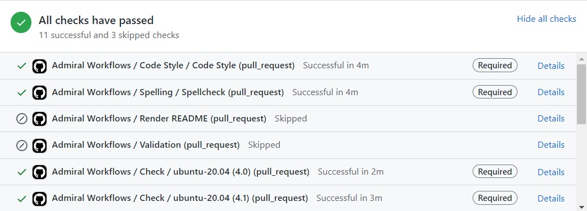

admiral CI/CD workflows
Purpose
This repository contains GitHub Actions continuous integration/continuous delivery (CI/CD) workflows, most of which are used by admiral and its extensions. Workflows defined here are responsible for assuring high package quality standards without compromising performance, security, or reproducibility.
Please refer to the .github/workflows directory to view the source code for the GitHub Actions workflows.
Notes :
- Some workflows are using github actions from InsightsEngineering group.
- Most of the workflows are sharing the same steps (see Common workflows structure)
Available workflows
The following workflows are available in this repository, and can be reused in your repository. Please note that when they are triggered depends on the set up of your repository.
Workflows to be triggered by MR (feature branch to main branch)
How to use these workflows?
Reuse (recommended)
You could add just one file called .github/workflows/common.yml to directly import these workflows while receiving the latest updates and enhancements, given that the workflows defined in this repository are reusable via the workflow_call GitHub Actions event.
The contents of the .github/workflows/common.yml file are available in the common.yml.inactive file in this repository. It can be customized by modifying the global variables (look for the env: key) or inputs of the called workflows (look for the with: keys) in the file.
To modify when the workflows are triggered, you can modify the if: key.
Copy as-is (not recommended)
Alternatively, if you want a high level of customization, you could simply copy the workflows as-is from this repository to your repository and modify them to your liking. We do not recommend this approach. For example, you might miss some updated or even bugs fixes from admiralci workflows. If you need some updates in some existing workflows, please raise an issue.
Where to see these workflows in action?
Pull Request
At the bottom of a pull request, you can check on the status of each workflow:
